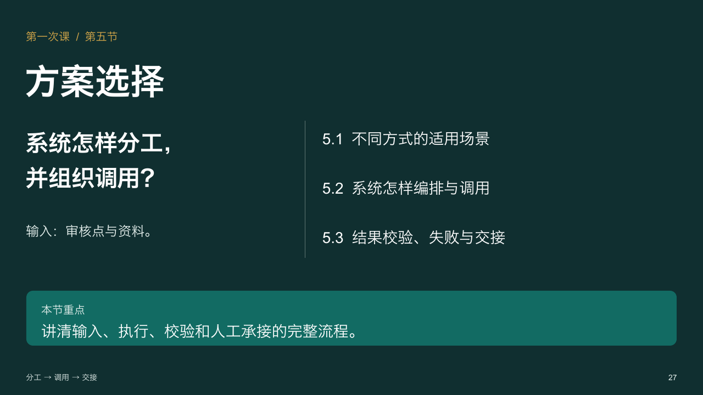
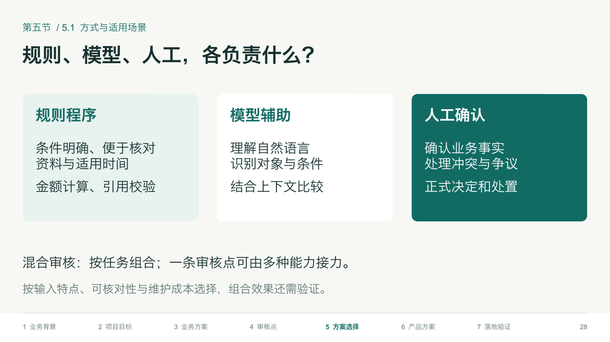
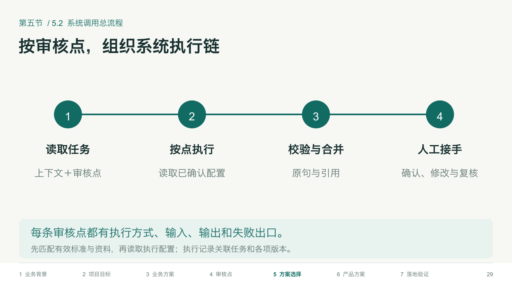
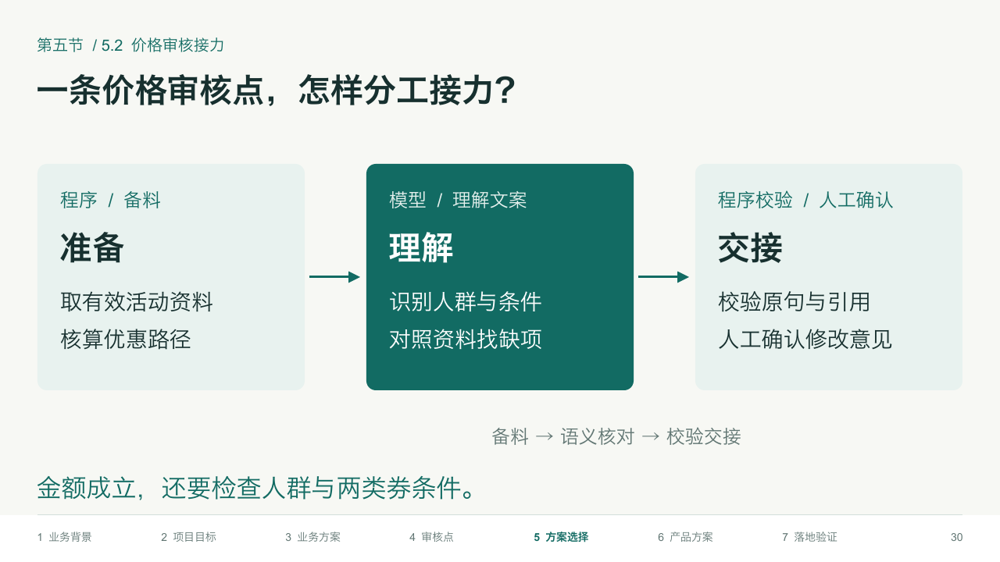
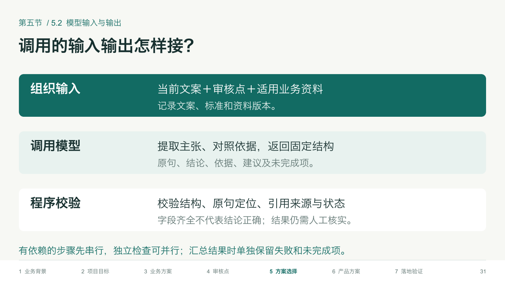
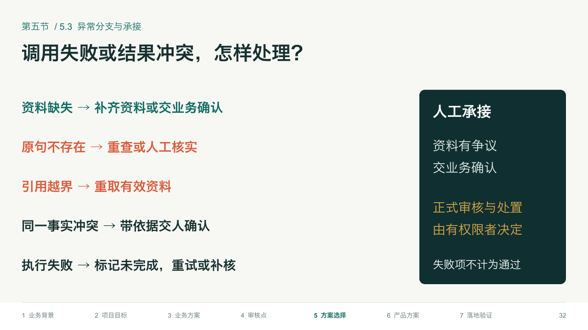
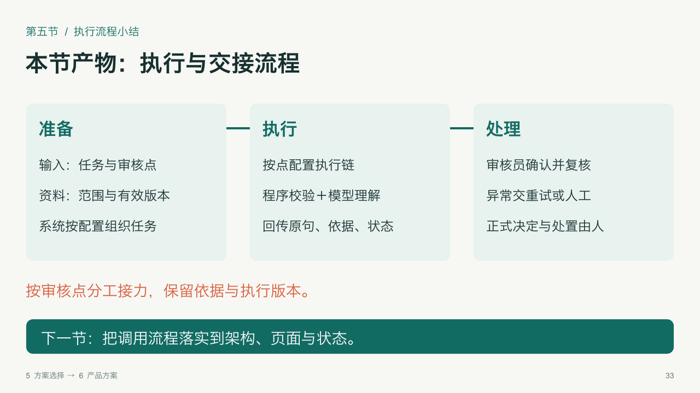

第一次课 · 第五节：方案选择与调用流程
简要比较规则、模型和人工的适用场景，重点说明按审核点组织执行、模型输入输出、结果校验、失败处理与人工承接。 共7页（P27—P33），含章节标题页和逐页教师备注。
P27 · 章节标题
P28 · 方式与适用场景
P29 · 系统调用总流程
P30 · 价格审核接力
P31 · 模型输入与输出
P32 · 异常分支与承接
P33 · 执行与交接小结
复用结构强化版原生模板。画面由实际PPTX渲染；案例、方案与期望判断为教学推演，尚未实测。讲解细节在教师备注中。